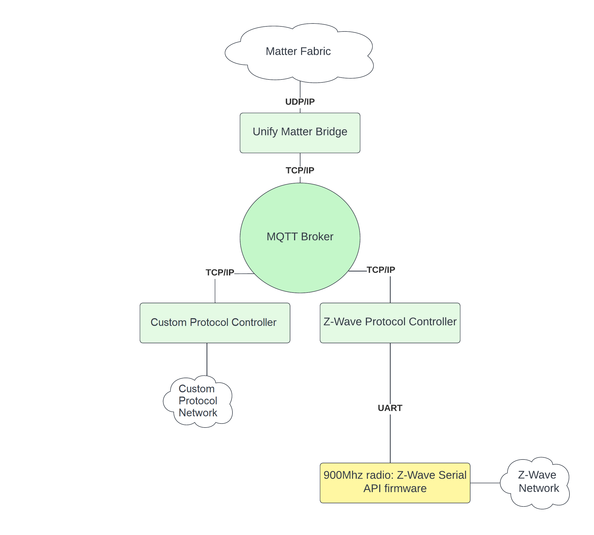

Unify Matter Bridge Overview
The Unify Matter Bridge is a reference application that makes legacy devices, such as Z-Wave devices, accessible on a Matter fabric. It does so by acting as an IoT Service in a Unify Framework.
In the Unify Framework, protocol controllers translate raw wireless application protocols such as Z-Wave into a common API called the Unify Controller Language (UCL). This enables IoT services to operate and monitor Z-Wave networks without being aware of the underlying wireless protocol.
In Unify, the transport between IoT services and Protocol Controllers is MQTT using JSON payloads for data representation.
On the Matter fabric, the Unify Matter Bridge is a Matter device that has dynamic endpoints, each representing an endpoint on one of the nodes in the Unify network. See the “Matter Specification” section “9.12. Bridge for non-Matter devices” for details.
The figure below illustrates the system architecture of the Unify Matter Bridge and two Unify protocol controllers.

More Information about the Unify Framework can be found here
Trying Out the Unify Matter Bridge using Portable Runtime Environment.
The Unify Portable Runtime Environment strives to get the unify matter bridge running as fast as possible on your desktop. Prerequisites for bringing up unify matter bridge with portable runtime are given here.
Detailed steps to quick start unify matter bridge using GUI can be found here.
Detailed steps to quick start unify matter bridge using cli can be found here.
Trying Out the Unify Matter Bridge Manually
To test the Unify Matter Bridge, a Raspberry Pi 4 is recommended. Install the latest release of the Unify SDK following the Unify Host SDK Getting Started Guide. Once the base Unify system is up and running, the Unify Matter Bridge may be installed on the Raspberry Pi 4.
The Silicon Labs Unify Matter Bridge release contains ready-to-use binaries of the Unify Matter Bridge and the chip-tool.
Note that the Unify Host SDK uses Raspberry Pi OS as the base system as opposed to the standard Ubuntu system used for the Matter OpenThread Border Router image.
Unify Matter Bridge as an IoT Service
The Unify Matter Bridge is a Unify IoT Service that allows for control of Unify devices from a Matter fabric. It translates Matter cluster commands and attributes accesses into the corresponding Unify MQTT publish messages. Unify node attributes are readable from the Matter Fabric, for example by a Google Home App, as the Unify Matter Bridge also caches the state of those attributes.
The Unify data model is largely based on the same data model as Matter, making the job of the Unify Matter Bridge relatively simple. There is almost a 1-1 relationship between them.
Note: Currently no control goes out to the Matter Fabric from the Unify Matter Bridge. The Unify Matter Bridge cannot ‘see’ what else is on the Matter Fabric, let alone control end devices in the Matter Fabric.
See the GitHub release notes for details on feature additions, bug fixes, and known issues.
Supported Clusters/Devices
The Unify Matter Bridge currently supports mapping the following clusters/device types.
Cluster |
Z-Wave Support |
|---|---|
Bridge Device Information |
✅ |
Level |
✅ |
OnOff |
✅ |
Identify |
❌ |
Group |
✅ |
Color Control |
✅ |
Occupancy Sensing |
✅ |
DoorLock |
✅ |
Window Covering |
❌ |
Temperature Measurement |
✅ |
Illuminance Measurement |
✅ |
Pressure Measurement |
✅ |
Flow Measurement |
❌ |
RelativeHumidity Measurement |
✅ |
Thermostat |
✅ |
All the above clusters are supported by EED for developer use only.
Note: The Matter specification states that if write interaction is made on the Mode attribute of the window covering cluster with an unsupported mode bit, the response should be CONSTRAINT_ERROR. Since UCL doesn’t support writing on the Mode attribute, UMB considers all mode bit as unsupported and always responds to Write Interaction on mode attribute with CONSTRAINT_ERROR.
Next Steps
For more information about the Unify SDK see Unify Host SDK Documentation